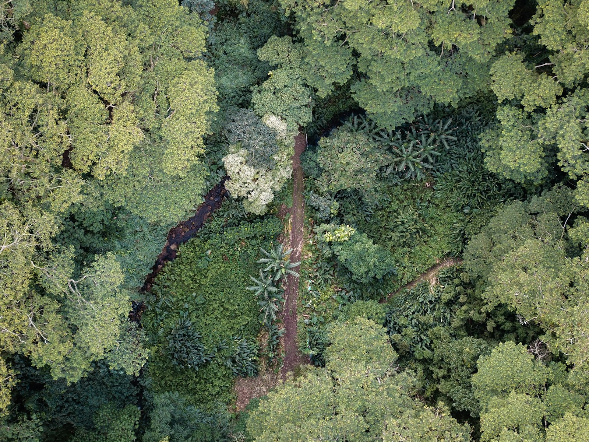
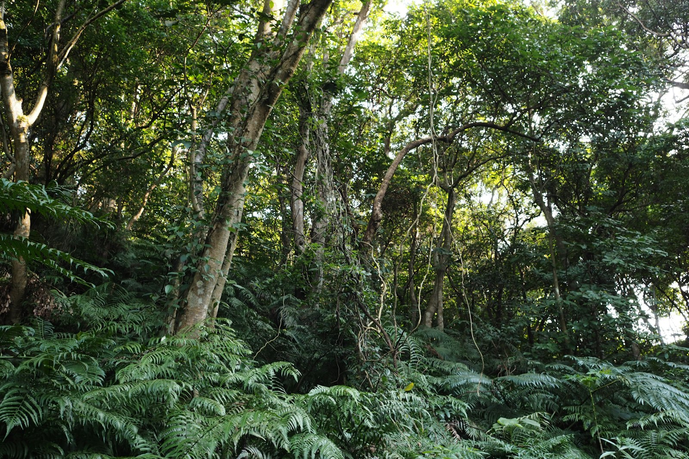
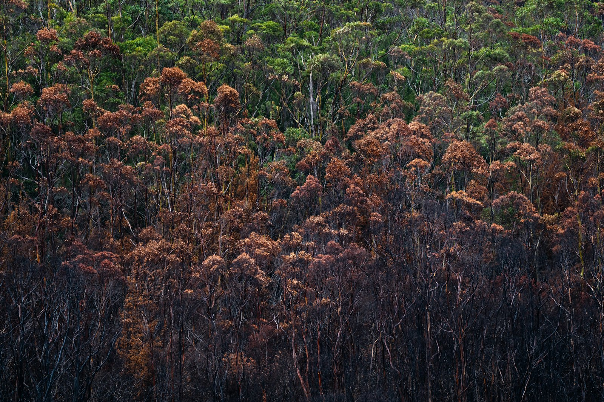
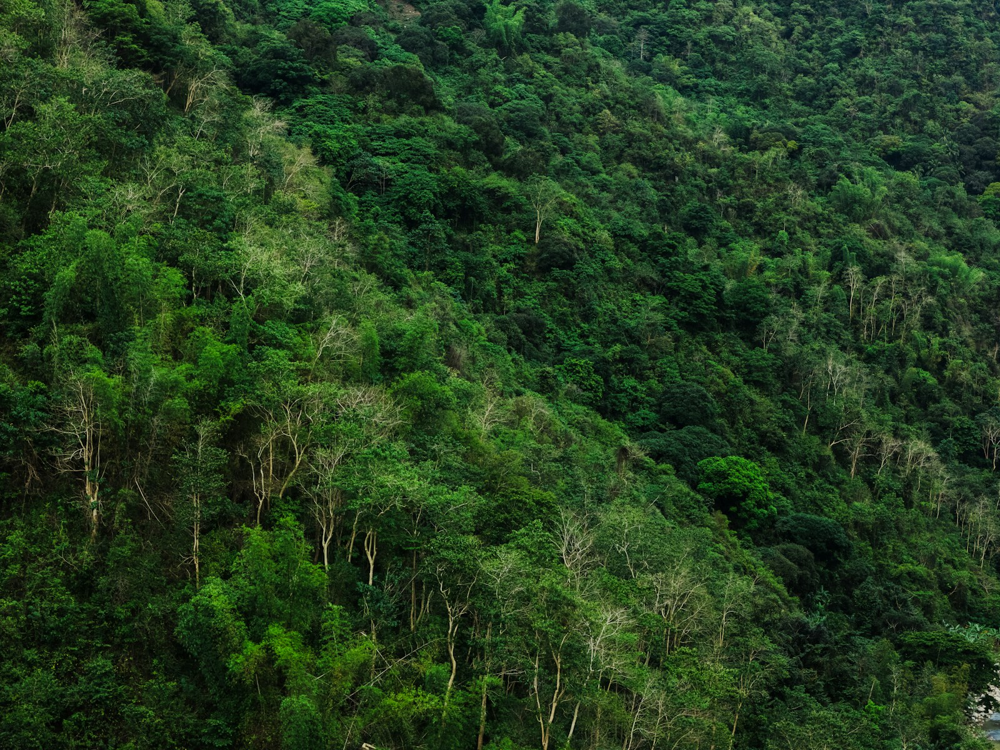

Amazon Field Guide · Threats No. 01
Amazon Under Siege: The Deforestation Crisis
Earth’s greatest rainforest still stretches across nine countries—but every cleared hectare punches a hole in wildlife homes, rainfall cycles, and the climate shield we all share.

People sometimes call the Amazon the “lungs of the Earth.” That nickname is a shortcut for something real: this vast forest stores huge amounts of carbon, recycles rain, and shelters more kinds of life than almost any other place on the planet. It covers about 5.5 million square kilometres across nine countries and holds more than 40,000 plant species. Yet even as overall clearing fell about 7% in 2024 compared with 2023, the forest still loses roughly 2,090 square kilometres every six months.
Deforestation does not only remove trees. It slices the remaining forest into islands. Those islands suffer edge effects—higher heat and lower humidity creeping inward—so animals that need cool, connected canopy struggle to move, feed, and find mates. Scientists warn of an extinction debt: many species may already be doomed unless the clearing stops soon, with roughly 80% of deforestation-driven extinctions still ahead.
Who loses when the green roof falls
Jaguars need huge territories. When pasture and roads cut those ranges, cats and cattle meet at the edges—and conflict follows. Reports link tens of millions of hectares of jaguar habitat loss in Brazilian frontier states, with fires and clearing displacing or killing more than a thousand jaguars in recent decades. Short-winged forest birds find it hard to cross open gaps. Toucans and other fruit-eaters lose the continuous canopy they use as a seed highway. Even slow specialists like three-toed sloths face heat stress and dangerous ground crossings when their tree bridges disappear.
“About 70% of cleared Amazon land ends up as cattle pasture—and cattle ranching is linked to roughly 80% of forest loss in Brazil.”
Climate is part of the story
Living forest locks carbon in wood and soil. When trees are cut and burned, that carbon escapes as greenhouse gases that warm the planet. Drier, hotter weather then makes the remaining forest more fire-prone—so drought, fire, and land clearing feed one another. Protecting the Amazon is not only a wildlife story; it is a climate story that reaches every classroom on Earth.
How forest becomes pasture
- Clear. Trees are cut or knocked down. Roads and trails open the way for more people and machines.
- Burn. Slash is set alight in the dry season. Smoke rises; carbon stored in wood escapes to the air.
- Plant grass / stock cattle. Pasture replaces the multi-layered rainforest. About seven in ten cleared Amazon hectares follow this path.
- Degrade. Thin soils wear out; fires return more easily; nearby forest edges dry and crack. Without care, the land produces less—and pressure builds to clear the next patch.
Five forces driving the clearing
- Cattle ranching dominates: Brazil’s huge herd pushes pasture deep into forest frontiers.
- Soy and other crops expand for animal feed and oil, often following new highways.
- Palm oil and industrial farms clear land in places like Peru, sometimes through illegal titling.
- Mining and roads punch corridors that invite further invasion and fire.
- Weak enforcement, land grabbing on public lands, and boom-and-bust politics speed illegal clearing.

Trouble ahead—and reasons to hope
Extreme drought and land-use change have made once fire-resistant forests more vulnerable. When fires race through fragments, jaguars, birds, and seed-dispersers lose both habitat and food at once. Profits from beef and soy, cheap loans for big farms, and speculation on public land keep the pressure high. Past policy rollbacks showed how fast illegal clearing can surge when enforcement budgets shrink.
Hope is growing again. Since 2023, Brazil has strengthened enforcement—more fines, land freezes, and seized machines—and restarted the Amazon Fund to pay for conservation. Satellite monitoring fuses forest alerts with registries and financial data for faster response. Protected areas already cover about 1.25 million square kilometres, with programmes aiming to lock in hundreds of thousands more. Indigenous territories—covering about 13% of Brazil—are among the most effective shields against forest loss.
Following cattle from farm to shop across hundreds of thousands of properties can make it harder to hide beef from newly cleared land. Corridor projects reconnect habitat so wildlife can move. Choosing verified products, supporting organisations that defend land rights, and sharing evidence-based facts are student-sized actions that still count. Every hectare kept standing stores carbon, shelters species, and helps stabilise the climate.


Odd facts
Word bank
- Deforestation
- — clearing forest so it no longer functions as a forest ecosystem.
- Edge effect
- — hotter, drier, windier conditions that creep into forest fragments from their cut borders.
- Extinction debt
- — species that will disappear later because habitat was already destroyed.
- Fragmentation
- — breaking one large habitat into smaller, isolated pieces.
- Pasture
- — grassland used for grazing cattle.
- Carbon store
- — carbon locked in living trees, dead wood, and soils instead of floating in the air as CO₂.
Where this came from
- Greenpeace — Animals of the Amazon
- Mongabay — Deforestation and fires
- Climate Policy Initiative — Cattle economics
- WWF — Mechanized agriculture
- Mongabay — Jaguar habitat loss
- Safe Worldwide — Extinction debt
- Global Landscapes Forum — Enforcement trends
- PNAS — Protected areas
- EOS — Forest fragmentation